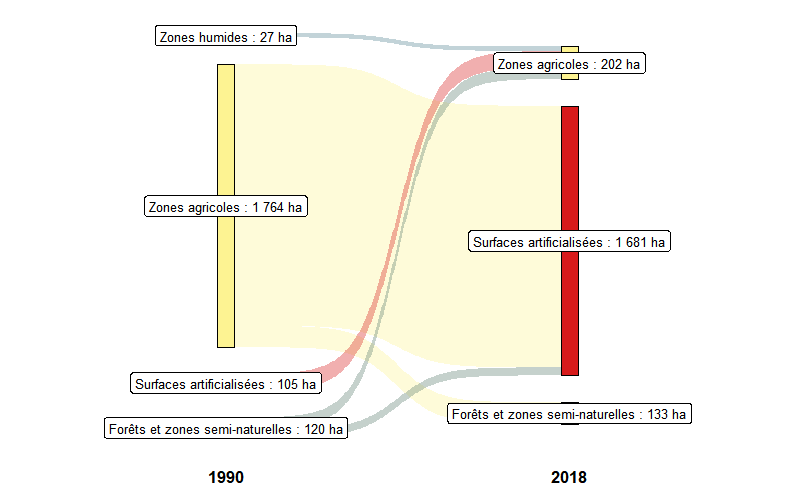
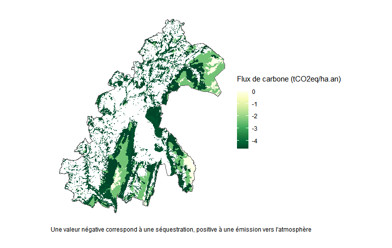

Guide d'utilisation du package Silvia
guide_utilisation_silvia.RmdInstallation
La version en développement de Silvia peut être installée depuis GitHub :
# install.packages("devtools")
devtools::install_github("silvia-team/silvia")Il est souvent nécessaire de mettre à jour, voire d’installer d’autres packages utilisés par l’outil Silvia. Il est donc vivement conseillé de répondre “All” si le message suivant apparaît:
These packages have more recent versions available.
It is recommended to update all of them.
Which would you like to update?Une fois les mises à jour effectuées, le package peut être chargé dans l’environnement :
Emplacement des données téléchargées
Le package utilise des données open source pour fonctionner (IGN, Corine Land Cover, gouvernement français) qui sont téléchargées automatiquement depuis l’API des bases de données en question.
Les données téléchargées sont stockées à l’emplacement indiqué par
l’utilisateur dans la fonction setup_path():
data_path <- setup_path(data_path = "D:/data_silvia")4 dossiers vides sont créés à l’emplacement indiqué :
Choix du territoire d’étude et téléchargement des données
Seules les données relatives au territoire sélectionné par l’utilisateur seront téléchargées, la première étape consiste donc à délimiter le territoire d’étude.
L’outil laisse la possibilité de choisir des types de territoires différents, parmi les suivants : commune, EPCI, département, région. Chaque territoire est associé à son code INSEE, renseigné sur le site de l’INSEE.
Voici un exemple de téléchargement des données relatives à l’EPCI du
Grand Annecy, avec la fonction
download_territory_files():
download_territory_files(epcis_fr = "200066793", years = c(1990, 2000, 2012, 2018), data_path = data_path)Les frontières du territoire sélectionné sont représentées à la fin du téléchargement des fichiers :
En l’état, il est conseillé de ne pas choisir de territoire plus étendu qu’un EPCI, pour des questions de temps de téléchargement des données.
Changement d’affectation des sols
La fonction plot_land_use_changes() permet de
représenter les changements d’occupation des sols du territoire entre 2
années (parmi celles sélectionnées précédemment). Le résultat est
présenté sous la forme d’un diagramme de
Sankey.
plot_land_use_changes(year_from = 1990, year_to = 2018, data_path = data_path)
Stocks de carbone
Une estimation des stocks de carbone sur chaque parcelle du
territoire est obtenue à partir de la fonction
get_carbon_stocks(). On obtient une table géoréférencée
avec les différents stocks calculés (dans les sols, dans la biomasse en
forêt et hors forêt). Par exemple, les stocks de carbone du Grand Annecy
en 2018 :
stocks <- get_carbon_stocks(year = 2018, data_path =data_path)La fonction plot_carbon_stocks() réalise une
cartographie des ces stocks de carbone sur le territoire à la date
choisie :
plot_carbon_stocks(stocks = stocks, data_path = data_path)
Le bilan chiffré des stocks de carbone sur le territoire est obtenu par la fonction suivante :
get_carbon_stocks_balance(stocks)| Stocks category | Stocks value |
|---|---|
| carbon stocks in biomass (ktCO2e) | 6575.65 |
| carbon stocks in soils (ktCO2e) | 15149.68 |
| carbon stocks in harvested wood (ktCO2e) | 544.13 |
| total carbon stocks (ktCO2e) | 22269.46 |
Flux de carbone
De la même manière, l’estimation des flux de carbone (CO2eq) sur le
territoire est obtenue avec la fonction
get_carbon_flows().
flows <- get_carbon_flows(year_from = 1990, year_to = 2018, data_path = data_path)A son tour, fonction plot_carbon_stocks() réalise une
cartographie des flux de carbone sur le territoire à la date
choisie.
Par exemple, les flux de carbone du Grand Annecy en 2018 :
plot_carbon_flows(flows = flows, data_path = data_path)Le bilan chiffré des flux annnuels moyen de carbone sur le territoire
est réalisé par la fonction get_carbon_flows_balance :
get_carbon_flows_balance(flows = flows, data_path = data_path)| Flows category | Flows_value |
|---|---|
| carbon flows from land use changes (ktCO2e/an) | 3.33 |
| carbon flows from forest (ktCO2e/an) | -97.09 |
| carbon flows from harvested wood (ktCO2e/an) | -2.29 |
| total carbon flows (ktCO2e/an) | -96.05 |
Flux de carbone forestiers
Il est également possible de représenter plus précisément les flux de
carbone des zones forestières avec la fonction
plot_forest_flows().
plot_forest_flows(data_path = data_path)